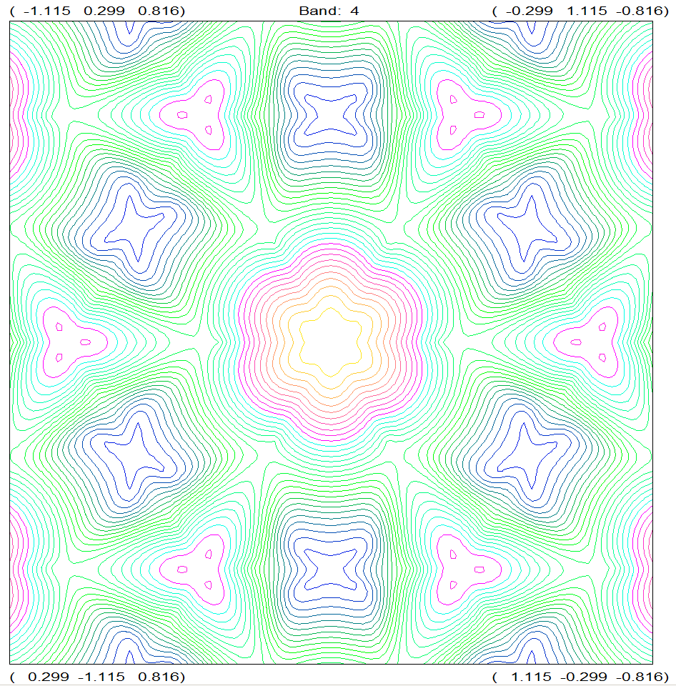

Described in "Kemp elimination catalysts by computational enzyme design", D. Rothlisberger, et al., Nature, 190-198, 453 (2008)

In this reaction, the heterocyclic ring in 5-nitro-benzisoxazole opens to form a cyanide or nitrile group and a hydoxyl anion. This reaction does not occur in nature. The heterocyclic ring is highly strained. That strain is relieved when the ring opens, so the reaction is irreversible. , and the reaction
Locating the transition state for the
re-arrangement involves the following steps:
PDB file 3CSM does not include hydrogen atoms, so the first step is to hydrogenate the system. Keywords in this file are:
GEO_DAT="3CSM.pdb": For convenience the original PDB file is not edited, instead it is added to the run using this keyword. If the data-set "3CSM Add-H.mop" had a fault, the data-set could be edited easily and the integrity of the original PDB file would not be compromised.
CHAINS=(A): 3CSM is dimeric but only one of the two systems is needed. By using this keyword, all atoms of system "A" are selected, and all atoms of system "B" are excluded.
ADD_H: Hydrogen atoms are added so as to neutralize all sites. This operation is almost always used together with a SITE keyword, this changes the hydrogenation of various sites so that the system is more realistic.
SITE=(salt,"[ARG]157:A.NH2"(+),"[TSA]400:A.O2"(-),"[GLU]44:A.OE1"(0),"[HIS]47:A.ND1"(0),"[TSA]400:A.O3"(-),"[ARG]16:A.NH2"(+),"[TSA]400:A.C6"(-),"[TSA]400:A.C8"(-)): This really big keyword adds and deletes hydrogen atoms as necessary to make a realistic system. In order, the SITE arguments used are:
SALT: Make all reasonable salt bridges between residues.
"[ARG]157:A.NH2"(+),"[TSA]400:A.O2"(-): Make a salt bridge between a residue and the substrate (the substrate is not a residue, so SALT would not make this salt bridge.)
"[TSA]400:A.O3"(-),"[ARG]16:A.NH2"(+): The same as "[ARG]157:A.NH2"(+),"[TSA]400:A.O2"(-).
"[GLU]44:A.OE1"(0),"[HIS]47:A.ND1"(0): Not critical. This salt bridge was created automatically, but both residues are on the surface, and it looks as if they are solvated.
"[TSA]400:A.C6"(-),"[TSA]400:A.C8"(-): This dehydrogenation is important and interesting. The main difference between TSA and chorismate or prephenate is that TSA has two extra hydrogen atoms. When TSA was hydrogenated, the correct structure for TSA was produced. To convert this TSA structure into the chorismate or prephenate, two hydrogen atoms need to be deleted. These arguments do this.
HTML: Not essential, but very useful in deciding where to add or delete hydrogen atoms. HTML produces a JSmol web-page that can be opened using NETSCAPE. Individual atoms to be used in the SITE keyword can easily be identified in this web-page. A useful trick is to start editing the SITE keyword and hover the cursor over the appropriate atom in the web-page. That displays the JSmol label, which can then be typed in the SITE keyword. If the PDB label is available, that can be used.
NOCOMMENTS: Suppress all PDB HEADER, TITLE, COMPOUND, SOURCE, etc., remarks.
OUTPUT: Suppress all voluminous output.
Run "3CSM Add-H.mop" and edit the resulting ARC file, as follows:
Edit "3CSM Add-H.arc" to replace
START_RES=(1A-222 300A-400) chains=(A) HTML output
with
START_RES=(1A-222 300A-400) chains=(A) HTML Opt mozyme eps=78.4 gnorm=5 output charge=0 t=2w
These are the keywords for an unconstrained global optimization of a system in aqueous media. Normally there would be an intermediate step in which the positions of the hydrogen atoms would be optimized, but as this is a very simple reaction, this step is not necessary.
Starting with "3CSM Add-H.arc" use an editor to move the O7 in the substrate away from C5, i.e., deliberately break the C5-O7 bond. Save the resulting structure as "3CSM Chorismate.mop"
Starting with "3CSM Add-H.arc" use an editor to move the C9 in the substrate away from C1, i.e., deliberately break the C9-C1 bond. Save the resulting structure as "3CSM Prephenate.mop"
Run both "3CSM Chorismate.mop" and "3CSM Prephenate.mop" These jobs take a long time, typically a few days, so a useful strategy is to run both of them at the same time on a machine that is dedicated to running long jobs.